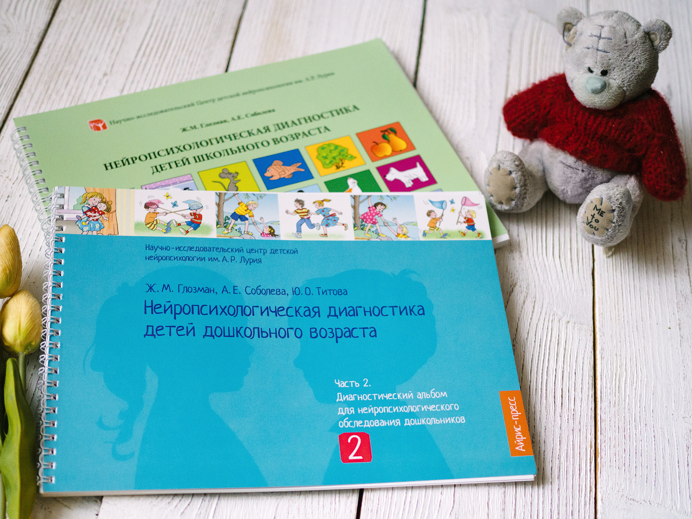

Подготовка ребёнка к нейропсихологической диагностике
Как снизить тревогу и сделать диагностику комфортной.
Читать статью →Помогаю детям развивать внимание, память, речь, эмоциональную устойчивость и навыки обучения.
Нейропсихологическая помощь детям дошкольного и школьного возраста.
Проблемы с чтением, письмом, усвоением школьной программы.
Сложности с концентрацией, удержанием инструкции и самоконтролем.
Тревожность, истощаемость, сложности адаптации и поведения.
Развитие когнитивных функций и учебной готовности в нейроподходе.
Меня зовут Майя Манохина, я детский нейропсихолог и психолог, специалист в области диагностики и сопровождения детей с особенностями развития когнитивных функций, эмоциональной сферы и учебной деятельности.
Основное направление моей работы — нейропсихологическая диагностика детей дошкольного и младшего школьного возраста. Диагностика позволяет определить индивидуальные особенности развития ребёнка, выявить причины трудностей обучения, внимания, памяти, саморегуляции и адаптации.
В своей практике я использую комплексный и научно-обоснованный подход, опираясь на современные методы нейропсихологии, возрастной психологии и детской диагностики.
Работаю с запросами, связанными с трудностями концентрации внимания, школьной неуспешностью, эмоциональной нестабильностью, повышенной утомляемостью, тревожностью, сложностями поведения и подготовки к школе.
Для меня важно не только выявить существующие трудности, но и помочь родителям понять сильные стороны ребёнка, его индивидуальные особенности и возможные пути дальнейшего развития.
В работе придерживаюсь бережного, уважительного и профессионального подхода, создавая для ребёнка комфортную и безопасную атмосферу.
Здесь можно разместить ваши основные форматы работы.
Первичная диагностика особенностей развития ребёнка.
Разбор трудностей, рекомендации и стратегия помощи ребёнку.
Индивидуальная работа по развитию когнитивных функций.
Полезные материалы для родителей о развитии детей, внимании, обучении и эмоциональном состоянии.

Как снизить тревогу и сделать диагностику комфортной.
Читать статью →Вы можете связаться со мной любым удобным способом.